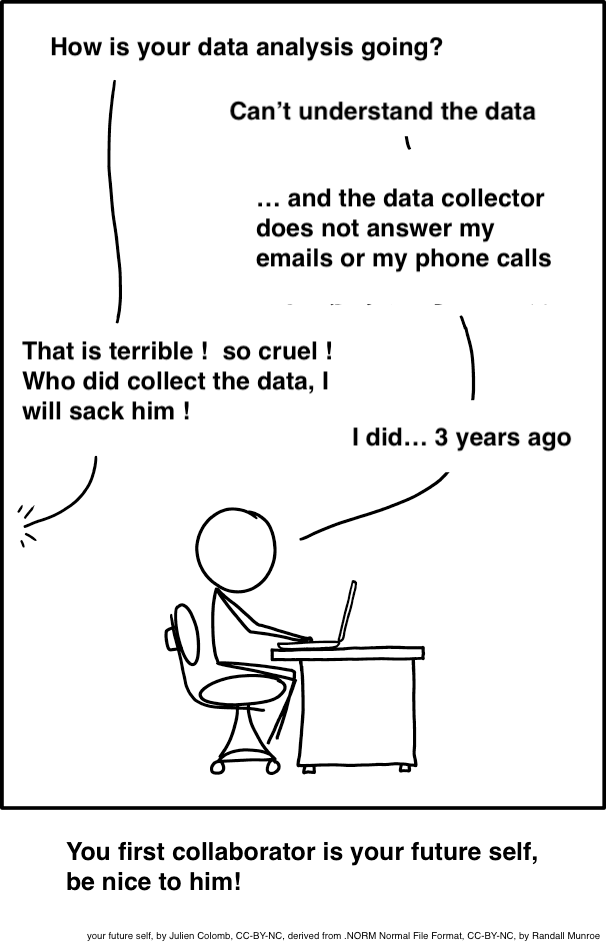

sessioninfo::session_info()Workshop
Organising Reproducible Data Analyses
Introduction
Session overview
In this workshop we will discuss why reproducibility matters and how to organise your work to make it reproducible. We will cover:
Reproducibility
What is reproducibility?
Reproducible: Same data + same analysis = identical results. “… obtaining consistent results using the same input data; computational steps, methods, and code; and conditions of analysis. This definition is synonymous with”computational reproducibility” (National Academies of Sciences et al. 2019)
Replicable: Different data + same analysis = qualitatively similar results. The work is not dependent on the specificities of the data.
Robust: Same data + different analysis = qualitatively similar or identical results. The work is not dependent on the specificities of the analysis.
Generalisable: Different data + different analysis = qualitatively similar results and same conclusions. The findings can be generalised

Why does it matter?

Five selfish reasons to work reproducibly. Alternatively, see the very entertaining talk
Many high profile cases of work which did not reproduce e.g. Anil Potti unravelled by Baggerly and Coombes Baggerly and Coombes (2009)
Will become standard in Science and publishing e.g OECD Global Science Forum Building digital workforce capacity and skills for data-intensive science OECD Global Science Forum (2020)
How to achieve reproducibility
Scripting
Organisation: Project-oriented workflows with file and folder structure, naming things
Documentation: Readme files, code comments, metadata, version control
Scripting
Rationale for scripting?
Science is the generation of ideas, designing work to test them and reporting the results.
We ensure laboratory and field work is replicable, robust and generalisable by planning and recording in lab books and using standard protocols. Repeating results is still hard.
Workflows for computational projects, and the data analysis and reporting of other work can, and should, be 100% reproducible!
Scripting is the way to achieve this.
Organisation
Project-oriented workflow
use folders to organise your work
you are aiming for structured, systematic and repeatable.
Example
-- liver_transcriptome/
|__data
|__raw/
|__processed/
|__images/
|__R/
|__reports/
|__figures/Naming things

Guiding principle - names of files and directories should be systematic and readable by humans and machines. Have a convention!
I suggest - no spaces in names - use snake_case or kebab-case rather than CamelCase or dot.case - use all lower case except very occasionally where convention is otherwise, e.g., README, LICENSE - ordering: use left-padded numbers e.g., 01, 02….99 or 001, 002….999 - dates ISO 8601 format: 2020-10-16 - write down your conventions
-- liver_transcriptome/
|__data
|__raw/
|__2022-03-21_donor_1.csv
|__2022-03-21_donor_2.csv
|__2022-03-21_donor_3.csv
|__2022-05-14_donor_1.csv
|__2022-05-14_donor_2.csv
|__2022-05-14_donor_3.csv
|__processed/
|__images/
|__code/
|__functions/
|__summarise.R
|__normalise.R
|__theme_volcano.R
|__01_data_processing.py
|__02_exploratory.R
|__03_modelling.R
|__04_figures.R
|__reports/
|__01_report.qmd
|__02_supplementary.qmd
|__figures/
|__01_volcano_donor_1_vs_donor_2.eps
|__02_volcano_donor_1_vs_donor_3.epsDocumentation
Readme files
READMEs are a form of documentation which have been widely used for a long time. They contain all the information about the other files in a directory. They can be extensive but need not be. Concise is good. Bullet points are good
Give a project description, brief
Outline the folder structure
-
Give software requirements: programs and versions used or required. There are packages that give session information in R Wickham et al. (2021) and Python Ostblom, Joel (2019)
import session_info session_info.show() Instructions run the code, build reports, and reproduce the figures etc
Where to find the data, outputs
Any other information that needed to understand and recreate the work
-- liver_transcriptome/
|__data
|__raw/
|__2022-03-21_donor_1.csv
|__2022-03-21_donor_2.csv
|__2022-03-21_donor_3.csv
|__2022-05-14_donor_1.csv
|__2022-05-14_donor_2.csv
|__2022-05-14_donor_3.csv
|__processed/
|__images/
|__code/
|__functions/
|__summarise.R
|__normalise.R
|__theme_volcano.R
|__01_data_processing.py
|__02_exploratory.R
|__03_modelling.R
|__04_figures.R
|__README.md
|__reports/
|__01_report.qmd
|__02_supplementary.qmd
|__figures/
|__01_volcano_donor_1_vs_donor_2.eps
|__02_volcano_donor_1_vs_donor_3.epsCode comments
- Comments are notes in the code which are not executed. They are ignored by the computer but are read by humans. They are used to explain what the code is doing and why. They are also used to temporarily remove code from execution.
Github co-pilot demo
Useful exercises
-
Want github co-pilot?
üé¨ Create a GitHub account
üé¨ Apply for student benefits
-
Update R and RStudio
üé¨ Update R
üé¨ Update RStudio. You will need the prelease Dessert Sunflower for github Copilot integration
-
Install package building tools
üé¨ Install Rtools (windows) or Xcode (mac)
-
Update packages:
üé¨ devtools, tidyverse, BiocManager, readxl
-
Install Quarto
üé¨ Install Quarto
You’re finished!
ü•≥ Well Done! üéâ
Independent study following the workshop
Pages made with R (R Core Team 2023), Quarto (Allaire et al. 2022), knitr (Xie 2022), kableExtra (Zhu 2021)
References
Allaire, J. J., Charles Teague, Carlos Scheidegger, Yihui Xie, and Christophe Dervieux. 2022. Quarto. https://doi.org/10.5281/zenodo.5960048.
Baggerly, Keith A, and Kevin R Coombes. 2009. “DERIVING CHEMOSENSITIVITY FROM CELL LINES: FORENSIC BIOINFORMATICS AND REPRODUCIBLE RESEARCH IN HIGH-THROUGHPUT BIOLOGY.” Ann. Appl. Stat. 3 (4): 1309–34. https://doi.org/10.2307/27801549.
National Academies of Sciences, Engineering, Medicine, Policy, Global Affairs, Engineering, Medicine Committee on Science, Public Policy, Board on Research Data, et al. 2019. Understanding Reproducibility and Replicability. National Academies Press (US). https://www.ncbi.nlm.nih.gov/books/NBK547546/.
OECD Global Science Forum. 2020. “Building Digital Workforce Capacity and Skills for Data-Intensive Science.” http://www.oecd.org/officialdocuments/publicdisplaydocumentpdf/?cote=DSTI/STP/GSF(2020)6/FINAL&docLanguage=En.
Ostblom, Joel. 2019. Session_info. https://gitlab.com/joelostblom/session_info.
R Core Team. 2023. R: A Language and Environment for Statistical Computing. Vienna, Austria: R Foundation for Statistical Computing. https://www.R-project.org/.
Wickham, Hadley, Winston Chang, Robert Flight, Kirill Müller, and Jim Hester. 2021. “Sessioninfo: R Session Information.”
Xie, Yihui. 2022. “Knitr: A General-Purpose Package for Dynamic Report Generation in r.” https://yihui.org/knitr/.
Zhu, Hao. 2021. “kableExtra: Construct Complex Table with ’Kable’ and Pipe Syntax.” https://CRAN.R-project.org/package=kableExtra.